- 维度引用，根据维度的增删改而自动更新，需要设置事实表中使用维度的主键，即外键：
- 度量：
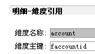
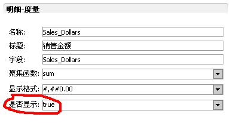
注意：是否显示是指 显示/隐藏 在维度选择器和切片中的度量，默认为true。
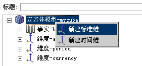
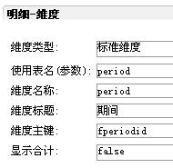
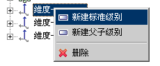
级别必须按范围大小顺序排序 ：年-季-月-周-日(可以取部分)
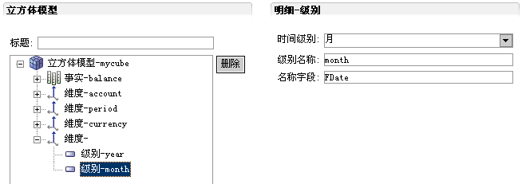
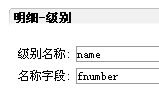
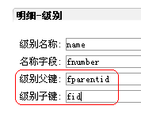
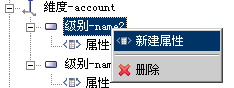
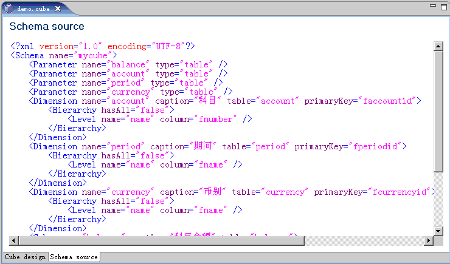
设计界面如下：
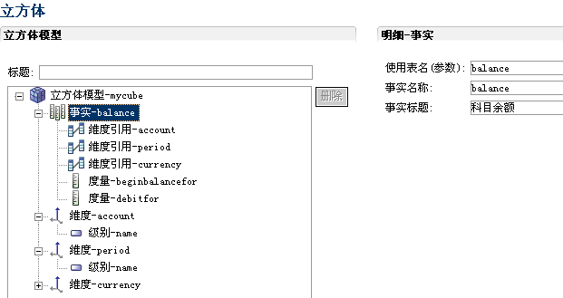
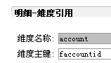
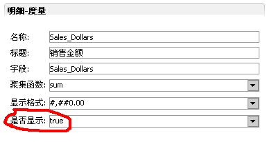
注意：是否显示是指 显示/隐藏 在维度选择器和切片中的度量，默认为true。
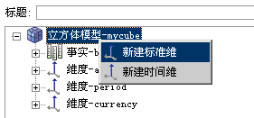
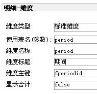
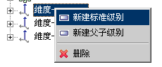
级别必须按范围大小顺序排序 ：年-季-月-周-日(可以取部分)
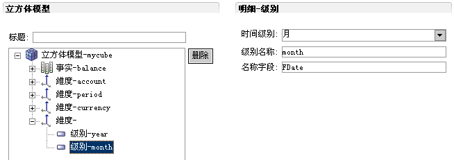
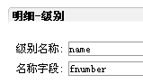
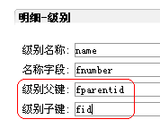
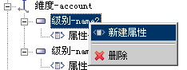
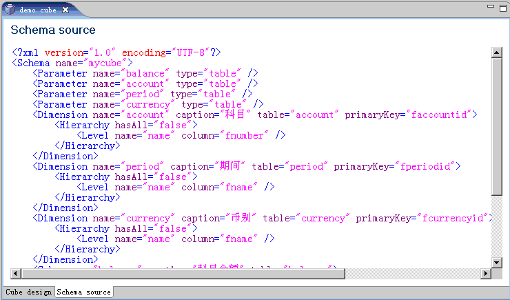